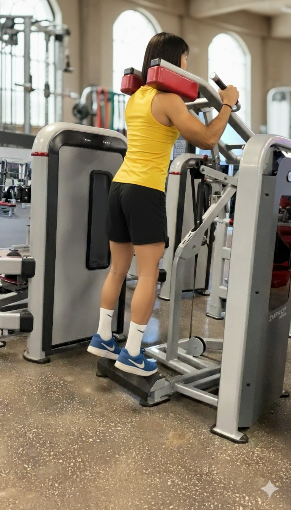
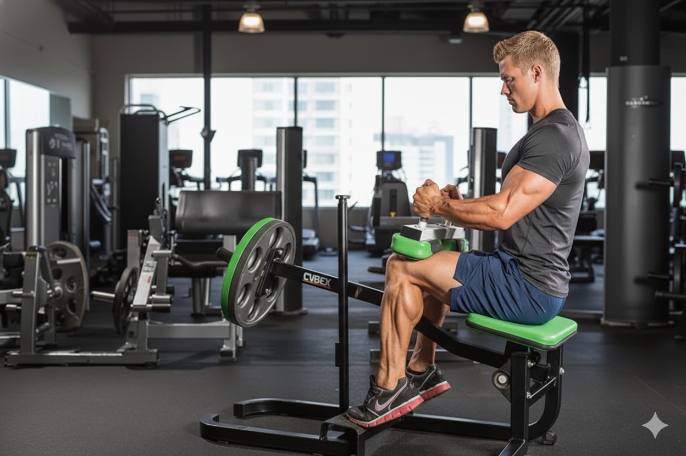
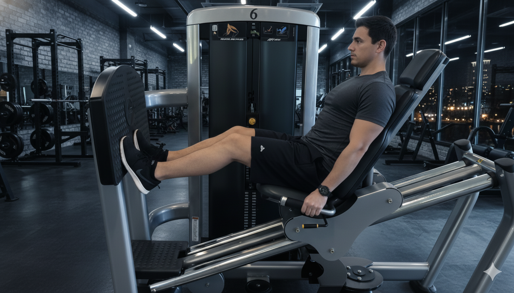
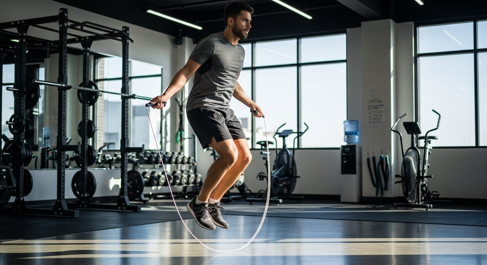

Pantorrilla de pie
No dejes tus pantorrillas atras, trabajandolas bien, mutaran.
Aqui podras encontrar como debes hacer este ejercicio.
Pantorrilla Sentado en Maquina
Alternativa unica estimular de una vez por todas la pantorrilla.
Aqui podras encontrar como debes hacer este ejercicio.
Pantorrilla en Prensa
Siempre habra increibles formas de estimular tus pantorrillas
Aqui podras encontrar como debes hacer este ejercicio.
Saltar la cuerda
Al aire libre, en tu casa, en cualquier sitio, sentiras tus pantorrillas arder
Aqui podras encontrar como debes hacer este ejercicio.